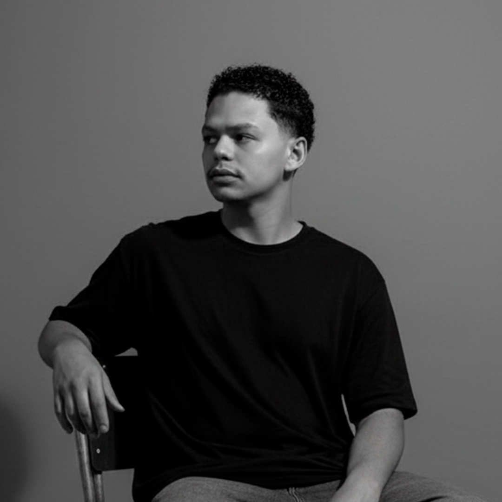

+3 ANOS DE EXPERIÊNCIA | +100 CONTAS ESTRUTURADAS

Sou apaixonado por Social Media, Web Design e Design, dedicado a fortalecer marcas e ampliar sua presença no ambiente digital. Atualmente, atuo na STD Engenharia Inspeções (@stdengenharia), onde implementei estratégias que resultaram em mais de 10 mil seguidores em apenas um ano.
> PRINCIPAIS_COMPETÊNCIAS:
Utilizo criatividade, dados e estratégia para desenvolver soluções visuais e digitais que gerem resultados reais. Acredito no poder do design e da comunicação digital para conectar marcas e pessoas. Estou sempre em busca de novos aprendizados e oportunidades para transformar ideias em projetos de impacto.
Sou apaixonado por Social Media, Web Design e Design, com foco em fortalecer marcas e ampliar sua presença digital. Atualmente, atuo na STD Engenharia Inspeções (@stdengenharia), onde contribuí para conquistar mais de 10 mil seguidores em um ano.
Tenho experiência em planejamento estratégico, criação de conteúdo, gestão de redes sociais, desenvolvimento de layouts e criação de interfaces visuais, utilizando ferramentas como Photoshop, Illustrator, Premiere, After Effects e CapCut.
Busco unir criatividade e estratégia para desenvolver soluções visuais que conectem marcas e pessoas e gerem resultados.
Linha progressiva para consolidar autoridade e escala
Ajudo empresas e marcas a fortalecerem sua presença digital por meio de estratégias de Social Media Marketing, Web Design e Design Gráfico. Crio conteúdos estratégicos, sites modernos e identidades visuais que conectam marcas ao público, geram autoridade e atraem novas oportunidades de negócio.
Estratégia de conteúdo, design e posicionamento para construir autoridade única para a sua marca.
"O Kevyn estruturou nossas redes sociais e, em menos de 30 dias, nosso engajamento triplicou."
"Ele reorganizou minha rede social, colocou minha tatuaria à mostra no Google Maps; Kevyn sabe o que está fazendo."
"Finalmente encontrei alguém que entende de conversão e negócios, não só de postar foto."
"O Kevyn foi bem criativo na criação do meu portfólio para apresentar as minhas roupas e meus projetos na arte da moda."
"O Kevyn pegou uma rede social minha de 15k de seguidores que estava em queda e, em menos de 1 ano, trouxe 70 mil novos seguidores."
"O Kevyn estruturou nossas redes sociais e, em menos de 30 dias, nosso engajamento triplicou."
"Ele reorganizou minha rede social, colocou minha tatuaria à mostra no Google Maps; Kevyn sabe o que está fazendo."
"Finalmente encontrei alguém que entende de conversão e negócios, não só de postar foto."
"O Kevyn foi bem criativo na criação do meu portfólio para apresentar as minhas roupas e meus projetos na arte da moda."
"O Kevyn pegou uma rede social minha de 15k de seguidores que estava em queda e, em menos de 1 ano, trouxe 70 mil novos seguidores."
Serviços como Social Media:
Serviços como Web Design:
Produtos Digitais e Entregáveis:
Entre em contato pelo WhatsApp para receber uma proposta adaptada às metas do seu negócio.
Para garantir máxima qualidade e foco no que domino, não incluo no escopo direto:
Caso o seu projeto necessite dessas demandas combinadas com Social Media, Web Design e Design, indico parceiros especializados de confiança.
Trabalho em quatro etapas práticas, sem burocracia:
Todo o atendimento acontece direto pelo WhatsApp ou direct do Instagram para maior agilidade.